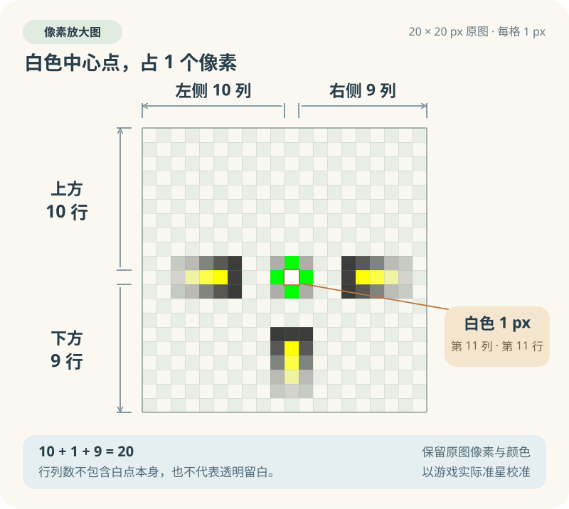
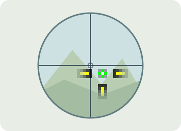
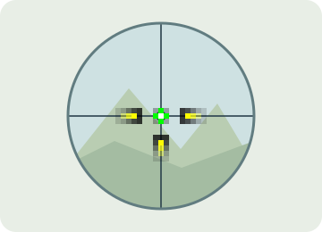

选一张喜欢的图片
准备一张静态 PNG 或 APNG 动画（使用 .png 后缀），建议使用透明背景，只留下准星图案。先把图片做成你希望显示的大小，避免在画布周围留下大面积无用区域。
- 1
准备透明 PNG
在绘图软件里画好准星，保留透明通道。棋盘格只是编辑器的背景，不要一起导出。
- 2
点击「选择图片」
从挂件菜单进入自定义准星，选择 PNG 后，准星会立即显示并居中。
- 3
进游戏确认位置
保留游戏内准星，或打开狙击镜，对照实际瞄准点再微调。
| 静态 PNG | 支持 .png，推荐使用透明背景。 |
|---|---|
| APNG 动画 | 支持使用 .png 后缀的 APNG 动画，保留图片自身的帧时长和循环设置。当前选择器不包含 .apng 后缀，请使用动画 PNG 的 .png 文件。 |
| 其他格式 | GIF、WebP、JPG / JPEG 目前不支持导入。请在绘图软件中转换格式；把 GIF 等文件直接改名为 .png 并不能转换图片格式。 |
| 文件大小 | 最大 10 MiB，即 10,485,760 字节（约 10.49 MB）；APNG 的全部动画数据也计入文件大小。 |
| 图片尺寸 | 宽、高各不超过 8192 像素，且画布宽 × 高不超过 16,777,216 像素，不是把各动画帧的像素相加。例如 4096×4096 可以导入，8192×8192 会超出总像素限制。 |
| 显示尺寸 | 最长边超过 830 逻辑像素时等比缩小；较小图片按原始宽高设置逻辑显示大小。实际屏幕像素大小还受系统显示缩放影响，保存的原文件不会被缩小或重写。 |
| 透明背景 | 建议保留透明通道，只显示准星图案。透明背景不是强制要求。 |
中心点，差一点也不同
Wi-Fi 会将整张图片的画布居中；图片里真正用来瞄准的那个点，需要你自己确认。不同游戏、分辨率和显示缩放下，合适的像素位置可能不同，不能只靠把图形看起来放在正中间。

左、上 10 px；右、下 9 px白色中心本身还占 1 px，所以每个方向合计都是 10 + 1 + 9 = 20 px。这个例子的瞄准点并没有让两侧像素数完全相等。
画布中心与白点位置要分开看20×20 是偶数尺寸，画布正中心落在像素格的交界上。单个白色像素占一整格，需要在游戏里验证它是否对准实际瞄准点。
准星设计预览
到游戏里，对齐一次
找一个方便观察的训练场景，让游戏内置准星或狙击镜中心作为参照。要比较的是自定义准星的瞄准点，与游戏参照点是否重合。


位置关系示意，并非游戏截图。偏移经过夸大，便于看清；参照点也可以使用游戏内置准星。
- 固定游戏显示设置
先选好实际游玩的分辨率、窗口模式和系统显示缩放。例如这里的 CS2 示例使用 1920×1080。
- 把两个瞄准点放在一起比较
显示自定义准星，同时保留内置准星或打开狙击镜，观察白色瞄准点是否与游戏中心重合。必要时截屏放大，逐像素检查。
- 微调，再看一遍
如果不重合，可解锁并拖动挂件调整位置；需要改图片内部的像素排布时，在绘图软件中微调瞄准点，导出后重新「选择图片」，再进入游戏验证。
- 确认后锁定位置
对齐后开启锁定，让鼠标穿透准星。之后更换图片、分辨率、窗口模式或显示缩放时，再做一次校准。
保存好，下次接着用
选择图片后，Wi-Fi 会把原始 PNG 复制到当前账号的资料目录，保存为 custom-crosshair.png。移动或删除你最初选择的文件，不会影响已经保存的准星；再次选择图片会替换这份文件。
macOS
~/Library/Application Support/com.wangyifang.Wi-Fi/<账号>/custom-crosshair.pngWindows
%LOCALAPPDATA%\com.wangyifang.Wi-Fi\<账号>\custom-crosshair.png<账号> 是当前 Steam 账号的数字目录；未连接 Steam 时为 local。
| 开启 / 关闭 | 在菜单中切换显示，不需要每次重新选择图片。 |
|---|---|
| 拖动 / 居中 | 解锁后调整位置；重置位置可让图片重新回到屏幕中央。 |
| 置顶 / 锁定 | 置顶让准星保持在其他窗口上方；锁定后鼠标穿透。需要再调整时，从菜单解锁。 |
| 不透明度 | 可在 25%–100% 之间调整，兼顾看清准星与游戏画面。 |
遇到一点小问题
为什么准星周围有白底或棋盘格？
这些背景可能已经画进 PNG。请在绘图软件中移除背景，并以透明 PNG 导出。文件扩展名是 PNG，并不代表内容一定透明。
为什么图片居中了，瞄准点还是有偏差？
居中依据的是整张画布。画布尺寸、图案在画布中的位置，以及游戏分辨率和显示缩放都会影响最终结果。按上面的图解，对照游戏内置准星或狙击镜中心校准。
图片大小有限制吗？能放大缩小吗？
文件和尺寸上限见前面的图片规格表。超过导入上限会提示错误；最长边超过 830 逻辑像素则会等比缩小显示。目前没有尺寸滑杆，请在绘图软件中先做好合适的大小。
锁定后拖不动，怎么重新调整？
回到「挂件 → 自定义准星」菜单解除锁定，再调整位置。校准完成后可以重新锁定。